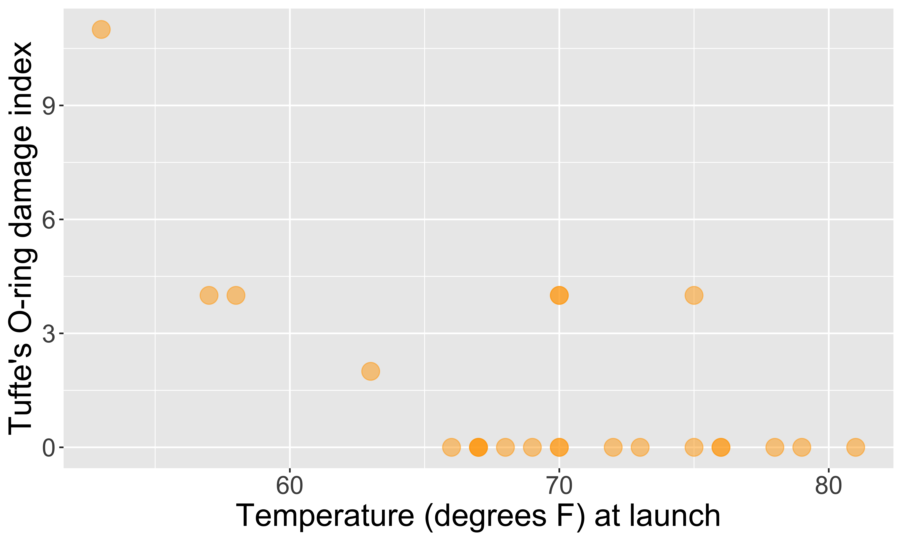
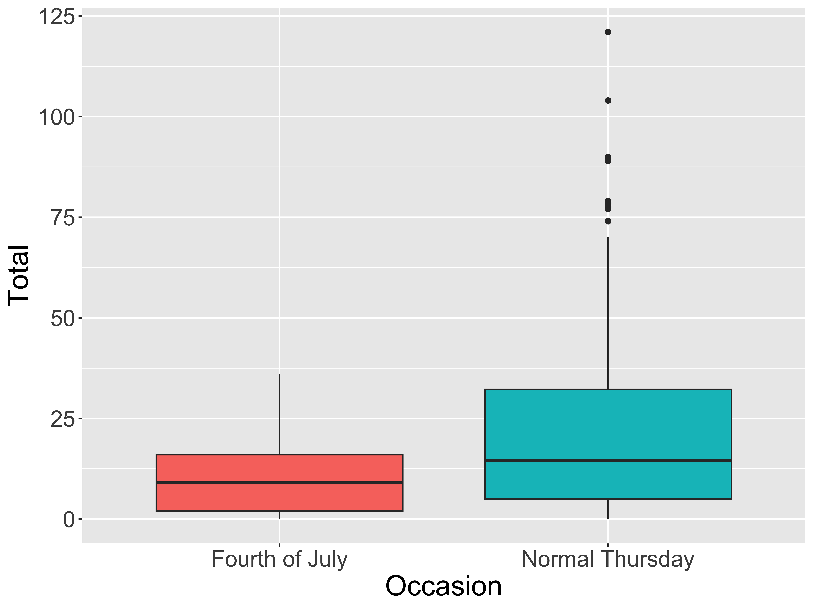

Data Visualization
Kelly McConville
DATA 100
Week 2 | Spring 2026
Challenger
Here’s one of those charts.

Challenger
Here’s another one of those charts.

Context Example

What visual cues are easier to compare?

Color Palettes – Sequential

Maps, like the Dude map are also a great way to provide context!
Color Palettes – Diverging

Color Palettes – Qualitative

Misleading Graphics
Be careful that your design choices don’t cause your viewer to draw incorrect conclusions about the data:

- Just letting the software make all the design choices can still lead to misleading graphs (recall the Georgia COVID graph).
Load Necessary Packages

ggplot2 is part of this collection of data science packages.
Data Setting: Eco-Totem Broadway Bicycle Count


Histograms
Binned counts of data.
Great for assessing shape.

Data Shapes

Boxplots
- Five number summary:
- Minimum
- First quartile (Q1)
- Median
- Third quartile (Q3)
- Maximum
- Interquartile range (IQR) \(=\) Q3 \(-\) Q1
- Outliers: unusual points
- Boxplot defines unusual as being beyond \(1.5*IQR\) from \(Q1\) or \(Q3\).
- Whiskers: reach out to the furthest point that is NOT an outlier

Boxplots

Violin Plots

Boxplot Versus Violin Plots
